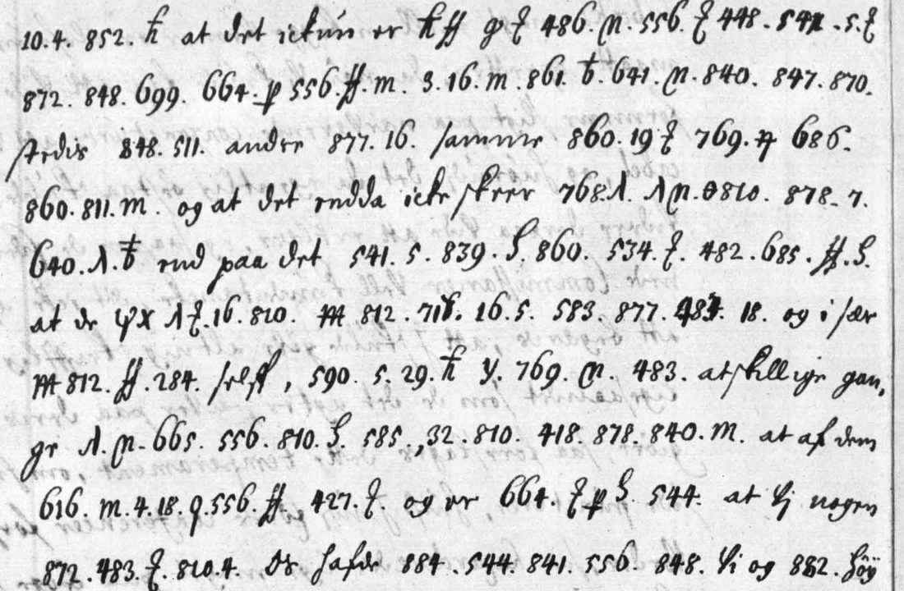

At a glanceKey from adjacent plaintext · partial (71% of the cipher)
- The letter
- An order of Christian V of Denmark, countersigned Griffenfeld, to his envoys in Stockholm, Jens Juel and Christoffer Lindenov, Copenhagen, 25 May 1673, in Danish. The part treated here is its closing cipher block.
- Where
- Rigsarkivet, Copenhagen, TKUA, Speciel del, Sverige, Jens Juels gesandtskabsarkiv; Arkivalieronline unit 261588, foot of image 10 and image 11. Not on DECODE.
- The cipher
- A syllabic code: three-digit groups for syllables, words and names, small numbers and signs for single letters, and many Danish words left in clear.
- How the key was found
- Rebuilt from the decipherments written at the time between the lines of two orders of 1674 in the same unit, and from the chancery’s loose leaf that deciphers the first block of 1673. A first test declared in advance failed; a second, on a third order of 1674 held out, gave 0.849 of its glosses exactly, against 0.144 for the best permuted key.
- What it says
- If the Swedes ask that their warships pass the Danish castles without striking, the envoys are to answer that the king is far from ever giving up that right.
- Credit
- Transcription, key, tests and reading by Brice Dudout, working with AI agents (pull request #409). The key material is the Danish chancery’s own decipherments of 1673–74. The lead came from the project’s paging of the TKUA envoys’ archives.
- Still open
- Six code groups have no value; six words are unresolved and two restored from the sense; eleven words are only probable; and one overwritten group in the first line of image 11 may be 841 or 541.
01 The order
The unit holds 62 images. Cipher appears on images 8 to 11, the order of 25 May 1673, and on images 32 to 43, three orders of 1674 in the same code. The order of 1673 is signed by the king and countersigned by Griffenfeld, “Kiøbenhavn den 25 Maji Ao 1673”. It has two cipher blocks. The first (images 8 and 9) is deciphered on a loose chancery leaf that lies at image 9; the filmed side of the leaf ends with that block. The closing block, three lines at the foot of image 10 and twelve on image 11, has no decipherment: nothing is written between its lines, and the leaf stops before it. It is the target here: 197 cipher tokens in 15 lines.

The three orders of 1674 carry the decipherment of the time between their lines: 21 July 1674 (images 32 to 37), 3 October 1674 with a postscript (images 39 to 41) and 6 October 1674 (images 42 and 43). The contributor sent no image; the crop above was fetched from Arkivalieronline when the pull request was integrated.
02 The code and its key
The three-digit groups run in alphabetical blocks. For each initial there are five syllables (417–421 ba be bi bo bu, 482–486 da de di do du, 530–534 fa fe fi fo fu), followed by whole words of that initial (585 haffuer, 595 hvor, 616 ingen, 648 krig, 699 med). Names and countries sit in the 200s and 300s (284 Sverig, 309 Holland, 321 Franckrig). Small numbers and signs stand for single letters (4 t, 5 e, 18 r). The hand of 1673 gives some of them other values than the hands of 1674: a barred m is k in 1673 and u in 1674, and 29 is x in 1673 and i in 1674.
The key file has three parts. Section A is the key as it was frozen and measured (222 entries in the frozen file; the table lists 218 of them and leaves out four raw notation entries), each the weighted majority of the glosses of the orders of 21 July and 3 October 1674, with the three-digit groups of the 1673 leaf that those orders do not gloss. Section B gives the values of the 1673 hand for small numbers and signs, taken from the loose leaf. Section C holds three values added after the measurement and not measured: 486 du and 534 fu, inferred as the fifth syllable of their blocks, and 590 huis, from a gloss of the order of 6 October 1674 seen after the test. The key table is released by the contributor under CC BY 4.0.
The key is recovered in part. Six groups of the closing block have no value anywhere in the unit: 32, 320, 348, 384 (twice), 646 and 906, seven tokens in all, so 190 of the 197 tokens decode.
03 Two tests, one failed
Two tests were written down and hashed before they were run, and each was run once. The order of events is by the contributor’s record: the pull request is a single commit, and the timestamps are his own.
The first test failed. It was declared on the closing block of 1673 itself: decode it once with the first key and measure the share of decoded letters covered by Danish words. The key would pass only with a cover of at least 0.70 that was also at least 0.06 above the best of 200 keys with their values permuted, and at least 0.06 above the best of 200 shuffles of the groups; otherwise the result was to be negative. The cover was 0.722. The best permuted key reached 0.668, a margin of 0.054 where 0.06 was required; the best shuffle reached 0.648. The test failed on the permuted keys by 0.006. The block was not measured again.
The contributor’s explanation, given after the result, is that in a syllabic code a key with its syllables swapped still produces strings that look Danish, so a word-cover score cannot tell the keys apart.
The second test passed, on other material. It was a different test, declared afterwards: hold out the order of 6 October 1674, rebuild the key from the other two orders and the 1673 leaf, with no pair of the held-out order, and decode the held-out order once against the glosses written on it at the time. The unit is the gloss segment, a cipher group with its gloss; a segment counts only if the whole decoded string equals the gloss after normalising spelling. The bar was at least 0.65 exact and at least 0.40 above each control.
- 0.849 of the 776 gloss segments (659) decode exactly as glossed;
- the best of 200 permuted keys gives 0.144 (mean 0.033);
- the best of 20 shifts of the glosses gives 0.035.
Before the measurement the two training orders had been tested on each other: 0.769 and 0.706. The held-out order was not unseen, and the contributor says so: its pairs had been transcribed the same day and were part of earlier aggregate key files, and one agent had seen image 43 whole at reduced size.
What this supports. The second test validates the code as rebuilt from the 1674 glosses, that is the three-digit groups: 94 of the 197 tokens of the closing block, 56 distinct groups. The other 103 tokens are small numbers and signs in the 1673 hand. Their values rest on the loose leaf, not on the test: with the same key the first block of 1673 decodes into running text that matches the leaf. Both tests were run again in the checks made for integration (test 2 at the independent verification, test 1 at the integration check) and gave the same figures; the rebuilt key is byte-identical to the frozen one, and 196 of the 197 tokens were found to agree with the images.
04 The reading
Words in capitals are written in clear in the order. Lower case is cipher, read with the key. Braces mark a probable word, square brackets a word restored from the sense where a group has no value, and angle brackets a place that does not resolve. Word division and punctuation are editorial; the spelling of the time is kept.
SKULDE DA UDI DEN MATERIE <e·384·r·o·i·jo·ce·ri·s> LIGESOM wi [befalt] haffuer <384> <co·n·r·e·348·r·t>
UDEN strygen woris [Slotte] at PASSERE med deris <646> krigskibe, SAA haffuer J at swaare
AT DET ICKUN ER en {Indulgencien}, tid som med <la·g·ge·n·s> {udstirkelse} {saaledes} til SIDES som ellers ANDRE
ved SAMMEN{tegn} permitteris, OG AT DET ENDDA ICKE SKEER paa {aldre} wilkaar END PAA DET foresatte {Fundament},
AT DE af andre {Kronede} Hoveder OG I SAER Kron Sverig SELF, {huis} {Exempel} de ATSKILLIGE GANGE
allegeret haffuer, <32·re> bewises, AT AF DEM ingen {strygen} begieren, OG ER langt fra AT WI NOGEN
tid den ret DE HAFDE wilde frasige som WI OG woris HØY{loflige} forfædre i saa MANGE aar {u}PAA{kieret} HAFFT HAFDE.
In English:
Should [they] then, in that matter, …, as we have [ordered], … [that their ships] pass our [castles] without striking with their … warships, then you are to answer that it is only an {indulgence}, for a time, as with … {extension} {so} on the side, as others elsewhere are allowed by an agreed {signal}; and that even so it happens on no {other} terms than on the foundation already laid down: that other {crowned} heads, and in particular the Crown of Sweden itself, {whose} {example} they have alleged several times, … prove that none of them demands the striking; and that we are far from ever wishing to give up the right which we and our most praiseworthy forefathers have held for so many years {unchallenged}.
“Strygen” is striking sail or flag as a salute: here the salute that the Danish crown claimed in the Sound from ships passing its castles. The order then goes on in clear to the coinage (“Hvad mynternes reglement mellem begge …”).
68 words of the block come from cipher groups. 48 are certain: every group has a value in the key and the word is regular Danish of the time. 12 are probable, 2 are restored and 6 are unresolved. By the rule used on this site (a text is complete when 95% of the cipher gives sense, and a guessed or supplied word does not count) only the certain words are counted, which gives 48 of 68, or 70.6%: a partial reading. The contributor’s own count in the pull request took certain and probable words together and gave 86.8%.
The passage reads as connected Danish from “uden strygen” to the end, with three holes on the way. The first line and a half, where three of the unvalued groups fall, does not form a sentence.
05 What remains uncertain
Grades follow the site’s convention: C is a value taken from the decipherments of the time, I a value inferred from its place in the alphabetical blocks, M an uncertain one. The certain words are grade C throughout.
- Groups with no value: 32, 320, 348, 384 (twice), 646, 906. None is glossed in images 32 to 43 or on the leaf. The blocks give only the initial of two of them: 384 is a word in a-, 646 a word in k-. They account for five of the six unresolved places (the opening word with 384, 384 alone, the word with 348, 646 before “krigskibe”, and “32·re”) and for the two words restored from the sense: befalt (320; in doubt, since the verb has its own group 425 in 1674) and Slotte (906).
- la·g·ge·n·s (line T05): every group has a value but the word does not construe. “Flaggens” would need an f; a misread sign is the likely cause.
- The overwritten group in the first line of image 11, transcribed 841 with a query. On the full-size image its last digit is a blot and its first digit has the open hooked top of this hand’s 5 rather than the two closed loops of the 8 beside it, though the ink is heavy and an 8 cannot be ruled out. If it is 541 (for), the words are “en indulgence for en tid”, an indulgence for a time, which is regular Danish; as transcribed they are “Indulgencien, tid”. The image does not settle it, and the transcription and the count were left as they were.
- Probable words, grade I: Indulgencien (486 = du) and Fundament (534 = fu), each with one value inferred from its syllable block.
- Probable words, grade M: huis (590: the measured key has “sind” from one gloss; “huis” comes from a gloss of the held-out order seen after the test); saaledes (847 is glossed both “forlader” and “saaledes” in 1674); Exempel (29 = x rests on one word of the leaf, “extenderes”; the pull request had this word as restored, and the value was added to the key at integration); strygen (one sign doubtful; the files disagree on whether it is the one in line T02 or in T12), permitteris (the key gives 686 as mis, read mi); aldre (or andre); Kronede (the groups give Kro·ni·de); udstirkelse, Sammentegn and upaakieret, which the reading marks as probable without a stated reason.
- Thin support inside the measured key: 544 fra, 583 ho and 852 swar have one gloss each in 1674, and 872 is glossed “tid” twice and “til” twice.
- The verso of the loose leaf was not filmed. It might carry the decipherment of the closing block; only Rigsarkivet can say.
- Prior art. The project’s vetting of the catalogue entry found no record on DECODE, nothing in Tomokiyo’s or Lasry’s lists, and no print of this order in Danmark-Norges Traktater 6, Vaupell, Jørgensen, Fryxell or Danske Samlinger. Neither the contributor nor the integration check opened those volumes again, and Rigsarkivet’s inventories were not searched, so an edition may exist that is not known here.
- No person has read the reading or checked a passage against the image; the transcription, the reading and the checks were made by AI agents.
Full texts
The transcription and the decryption of every document on this page, so that the reading can be used and checked. Short files are shown here; all are in the repository.
Christian V to Juel and Lindenov, Copenhagen 25 May 1673, closing cipher block read in part
On the salute at sea in the Sound: if the Swedes ask that their warships pass the Danish castles without striking, the envoys are to answer that any exemption is only a temporary indulgence, on the footing already laid down that other crowned heads and Sweden itself, whose example they allege, claim no such salute; and that the king will never give up a right his ancestors held unchallenged for so many years.
Builds coherent sentences, but under the read bar of 95% of words read as sense (71% here); the holes are marked in the reading.
Transcription
# christianv1673 - transcription of the closing cipher block of the order of Christian V to Jens Juel and Christoffer Lindenov, # Copenhagen, 25 May 1673 (Rigsarkivet, TKUA, Speciel del, Sverige, Jens Juels gesandtskabsarkiv; Arkivalieronline unit 261588, # image 10 foot, T01-T03, and image 11, T04-T15). 197 cipher tokens. No decipherment of the time exists for this block. # Transcribed from the Arkivalieronline images by a Claude Opus 5.5 agent (11 Nov 2026) BEFORE any key was applied to it; frozen # (frozen/working/transcr/CIBLE_img10-11.txt, SHA-256 ae997e90... in frozen/FREEZE.sha256). Identical to that file below the header. # Conventions: groups separated by spaces; Danish words written in clear in the order between [ ]; # signs: Q = two shapes (q barred = i; 4 hooked and barred = r, see key.tsv and frozen/working/notation/TABLE-SIGNES.tsv), # q = q barred or the g-shaped sign (both i), ff = ff ligature, Z = the looped n-sign, S = the t-sign (S / 3 with tail), P = p barred, # tb = t/b barred, hb and h = h barred, Cn = the sign "(n", lam = small lambda, psi = psi, th = theta, D = delta, m = plain m, # m~ = barred m, x = x, y = y; ? = doubtful reading. # The first cipher block of the same order (images 8-9, about 520 tokens, deciphered on the chancery's loose leaf, image 9 right) # is in frozen/working/transcr/FEUILLE_chiffre_img8-9.txt with our reading of the leaf (FEUILLE_clair_img9R.txt); it is not the target. # (The order opens in clear; the closing block starts after "Skulde da udi den materie".) # Integration check, 12 Nov 2026: 196 of the 197 tokens agree with the images; T04 841? is overwritten and may be 541 (NOTES.md). T01 5 384 18 14 Q 611 448 811 m [ligesom] 878 320 lam Cn 4 T02 585 384 450 ff tb 5 348 tb 4 [uden] m 4 18 Q 556 ff 882 m T03 667 S 906 lam S [passere] 699 489 646 648 858 [saa] 585 Q T04 10 4 852 hb [at det ickun er] hb ff q Z 486 Cn 556 Z 448 841? 5 Z T05 872 848 699 664 P 556 ff m 3 16 m 861 tb 641 Cn 840 847 870 T06 [sides] 848 511 [andre] 877 16 [sammen] 860 19 Z 769 Q 686 T07 860 811 m [og at det endda icke skeer] 768 lam lam Cn th 810 878 7 T08 640 lam tb [end paa det] 541 5 839 S 860 534 Z 482 685 ff S T09 [at de] psi x lam Z 16 810 m~ 812 718 16 5 583 877 483 18 [og i saer] T10 m~ 812 ff 284 [self ,] 590 5 29 hb y 769 Cn 483 [atskillige gange] T11 lam Cn 665 556 810 S 585 32 810 418 878 840 m [at af dem] T12 616 m 4 18 q 556 ff 427 Z [og er] 664 Z P S 544 [at wi nogen] T13 872 483 Z 810 4 [de hafde] 884 544 841 556 848 [wi og] 882 [høy] T14 667 x 666 556 541 531 16 810 q 839 lam [mange] lam psi tb 3 [paa] T15 m~ q 5 810 S [hafft hafde. Hvad mynternes reglement mellem begge ...]
Decryption
# christianv1673 - raw decryption of the closing cipher block (image 10 foot + image 11, lines T01-T15), order of 25 May 1673
# Deterministic decode, group by group, of transcription.txt with key.tsv. No correction, no word division (that is reading.md).
# Each line: the groups as group=value, then the run of values; plain Danish of the original in [CAPITALS]; <n> = group with no value.
# Values: three-digit groups = KEY-v2 (frozen/working/KEY-v2.json, from the 1674 interlinear glosses) except the three marked *
# (486 du, 534 fu, 590 huis: added after the measurement, see key.tsv); small numbers and signs = values of the 1673 hand given by
# the chancery's decipherment leaf of the first block (image 9 right). "Q" covers two shapes in our transcription: q barred = i
# (T01, T03, T02 probable), 4 hooked = r (T06), per frozen/working/notation/TABLE-SIGNES.tsv.
# + 29 = x: value of the 1673 hand from the leaf (first block, 'e 29 te n' = extenderes), added to key.tsv section B at the integration
# check of 12 Nov 2026; the file as sent printed 29=i, the 1674 value, which gave 'eiempel'.
# T04 841?: the group is overwritten on image 11 line 1. If it is 541 (for), the line runs '... en indulgence for en tid'; the
# value below follows the transcription as frozen (841 = si). See NOTES.md, Integration check.
T01 5=e 384=? 18=r 14=o Q=i 611=jo 448=ce 811=ri m=s [LIGESOM] 878=wi 320=? lam=a Cn=l 4=t
-> e<384>roijoceris LIGESOM wi<320>alt
T02 585=haffuer 384=? 450=co ff=n tb=r 5=e 348=? tb=r 4=t [UDEN] m=s 4=t 18=r Q=i 556=ge ff=n 882=woris m=s
-> haffuer<384>conre<348>rt UDEN strigenworiss
T03 667=lo S=t 906=? lam=a S=t [PASSERE] 699=med 489=deris 646=? 648=krig 858=skibe [SAA] 585=haffuer Q=i
-> lot<906>at PASSERE medderis<646>krigskibe SAA haffueri
T04 10=a 4=t 852=swar hb=e [AT DET ICKUN ER] hb=e ff=n q=i Z=n 486=du* Cn=l 556=ge Z=n 448=ce 841?=si 5=e Z=n
-> atsware AT DET ICKUN ER enindu*lgencesien
T05 872=tid 848=som 699=med 664=la P=g 556=ge ff=n m=s 3=u 16=d m=s 861=ti tb=r 641=ke Cn=l 840=se 847=saaledes 870=til
-> tidsommedlaggensudstirkelsesaaledestil
T06 [SIDES] 848=som 511=ellers [ANDRE] 877=ve 16=d [SAMMEN] 860=te 19=g Z=n 769=pe Q=r 686=mis
-> SIDES somellers ANDRE ved SAMMEN tegnpermis
T07 860=te 811=ri m=s [OG AT DET ENDDA ICKE SKEER] 768=pa lam=a lam=a Cn=l th=d 810=re 878=wi 7=l
-> teris OG AT DET ENDDA ICKE SKEER paaaldrewil
T08 640=ka lam=a tb=r [END PAA DET] 541=for 5=e 839=sa S=t 860=te 534=fu* Z=n 482=da 685=me ff=n S=t
-> kaar END PAA DET foresattefu*ndament
T09 [AT DE] psi=a x=f lam=a Z=n 16=d 810=re m~=k 812=ro 718=ni 16=d 5=e 583=ho 877=ve 483=de 18=r [OG I SAER]
-> AT DE afandrekronidehoveder OG I SAER
T10 m~=k 812=ro ff=n 284=sverig [SELF ,] 590=huis* 5=e 29=x+ hb=e y=m 769=pe Cn=l 483=de [ATSKILLIGE GANGE]
-> kronsverig SELF , huis*exempelde ATSKILLIGE GANGE
T11 lam=a Cn=l 665=le 556=ge 810=re S=t 585=haffuer 32=? 810=re 418=be 878=wi 840=se m=s [AT AF DEM]
-> allegerethaffuer<32>rebewises AT AF DEM
T12 616=ingen m=s 4=t 18=r q=i 556=ge ff=n 427=begiere Z=n [OG ER] 664=la Z=n P=g S=t 544=fra [AT WI NOGEN]
-> ingenstrigenbegieren OG ER langtfra AT WI NOGEN
T13 872=tid 483=de Z=n 810=re 4=t [DE HAFDE] 884=uilde 544=fra 841=si 556=ge 848=som [WI OG] 882=woris [HØY]
-> tiddenret DE HAFDE uildefrasigesom WI OG woris HØY
T14 667=lo x=f 666=li 556=ge 541=for 531=fe 16=d 810=re q=i 839=sa lam=a [MANGE] lam=a psi=a tb=r 3=u [PAA]
-> lofligeforfedreisaa MANGE aaru PAA
T15 m~=k q=i 5=e 810=re S=t [HAFFT HAFDE. HVAD MYNTERNES REGLEMENT MELLEM BEGGE ...]
-> kieret HAFFT HAFDE. HVAD MYNTERNES REGLEMENT MELLEM BEGGE ...Reading
# christianv1673 - reading of the closing cipher block (Danish, spelling of the order)
Order of Christian V to Jens Juel and Christoffer Lindenov, Copenhagen, 25 May 1673, closing block (image 10 foot and image 11,
lines T01-T15 of `transcription.txt`). Read by sense from `decryption.txt` with `key.tsv`, after the key was validated
(`validation.txt`). The block itself was never used for any measurement.
Marks: CAPITALS = words written in clear in the order (not counted); plain lower case = certain (every group read with the key,
the word is regular Danish of the time); {x} = probable (one value inferred or one sign doubtful, see the list; not counted as
read); [x] = restored
(a group with no value, word supplied from the sense; the groups are given in brackets); <...> = unresolved. Word division and
punctuation are ours. Spelling of the time kept (w for v, ff, haffuer, woris).
## Text
SKULDE DA UDI DEN MATERIE <e·384·r·o·i·jo·ce·ri·s> LIGESOM wi [befalt] (320·a·l·t) haffuer <384> <co·n·r·e·348·r·t>
UDEN {strygen}/strygen woris [Slotte] (s·lo·t·906) at PASSERE med deris <646> krigskibe, SAA haffuer J at swaare
AT DET ICKUN ER en {Indulgencien}, tid som med <la·g·ge·n·s> {udstirkelse} {saaledes} til SIDES som ellers ANDRE
ved SAMMEN{tegn} permitteris, OG AT DET ENDDA ICKE SKEER paa {aldre} wilkaar END PAA DET foresatte {Fundament},
AT DE af andre {Kronede} Hoveder OG I SAER Kron Sverig SELF, {huis} {Exempel} de ATSKILLIGE GANGE
allegeret haffuer, <32·re> bewises, AT AF DEM ingen {strygen} begieren, OG ER langt fra AT WI NOGEN
tid den ret DE HAFDE wilde frasige som WI OG woris HØYloflige forfædre i saa MANGE aar {u}PAA{kieret} HAFFT HAFDE.
(T04: the group after 448 is overwritten on image 11 and was transcribed 841?. If it is 541 = for, the words are "en {Indulgence}
{for} en tid", an indulgence for a time, which is better Danish than "Indulgencien, tid"; the image does not decide it, see NOTES.md,
Integration check. The text above and the count below keep the transcription as frozen.)
(In line T02 the first "strygen" is certain; the one in T12 is probable. "HØYloflige" and "uPAAkieret" mix clear syllables of
the original with cipher: høy- and paa- are written in clear, -loflige and u-/-kieret are cipher. "SAMMENtegn": sammen in clear,
-tegn in cipher.)
## Words
68 words come from cipher groups (words written in clear in the order are not counted).
| class | n | words |
|---|---|---|
| certain | 48 | wi (T01); haffuer, strygen (T02, q barred = i), woris (T02); at, med, deris, krigskibe, haffuer, J (T03, q barred); at, swaare, en (T04); tid, som, med, til (T05); som, ellers, ved (T06); paa, wilkaar (T07); foresatte (T08); af, andre, Hoveder (T09); Kron, Sverig, de (T10); allegeret, haffuer, bewises (T11); ingen, begieren, langt, fra (T12); tid, den, ret, wilde, frasige, som, woris (T13); høyloflige, forfædre, i, saa, aar (T14) |
| probable | 12 | permitteris (T06; the key gives 686 = mis, read mi as its syllable block 684-688 requires); Indulgencien (486 = du inferred from the syllable block; ending -sien doubtful); udstirkelse; saaledes (847, one gloss in 1674); Sammentegn; aldre (or andre); Kronede (Kro·ni·de); strygen (T12, q doubtful); upaakieret; huis = hvis (590: gloss "huis" in 1674 and the h block 580-596, KEY-v2 has "sind"); Fundament (534 = fu inferred from the syllable block); Exempel (e·29·e·m·pe·l; 29 = x rests on one word of the leaf, "extenderes" in the first block, and was added to the key at the integration check of 12 Nov 2026; the PR had it as restored) |
| restored | 2 | befalt (320; doubt: the verb befale has its own group 425 in 1674); Slotte (906) |
| unresolved | 6 | e·384·r·o·i·jo·ce·ri·s (T01); 384 (T02); co·n·r·e·348·r·t (T02); 646 (a word in k-, before "krigskibe"); la·g·ge·n·s (T05; "Flaggens" is tempting but needs an f); 32·re (T11) |
**Read share: 48/68 = 70.6%.** Only the certain words count as read: the rule in the README (95% of the cipher gives sense)
counts a guessed word, a supplied word and a hole as not read, and the probable words here each rest on an inferred value, a single attestation or a
doubtful sign. Under 95%: a partial reading.
The contributor's count, as sent in pull request #409, took certain and probable words together: 59/68 = 86.8% (62/68 = 91.2%
with the three words then restored). That is his figure; it is given once here and is not used elsewhere. With Exempel moved from
restored to probable the same rule would give 60/68.
Note on the count (contributor). The fiche of our working folder (11 Nov 2026) gave 46 certain, 10 probable, 3 restored, 6
unresolved of 65 words. Re-counted word by word for this PR, three certain words were missing from its list (wi in T01, haffuer
at the head of T02, woris in T13); no word changed class.
## Why the holes
Five of the six unresolved words and the two restored ones come from six code groups, seven occurrences: 32, 320, 348, 384
(twice), 646 and 906 (the sixth unresolved word, la·g·ge·n·s, has a value for every group).
None of them is glossed anywhere in the volume: not in the two glossed orders used for the key (images 32-41, searched before the
measurement) and not in the held-out order (images 42-43, searched after it). The syllable blocks of the code give the initial
of two of them only (384 = a word in a-, 646 = a word in k-). The loose decipherment leaf of image 9 stops before this block; its
verso was not filmed.
## Sense
The block deals with the salute at sea in the Sound (Øresund): whether Swedish warships must strike (stryge) when they pass
the Danish castles. The king tells his envoys that if, in
this matter, [the Swedes argue that] their ships should pass "our castles" with their warships without striking, they are to
answer that any such exemption is only an indulgence for a time, as others are allowed elsewhere by an agreed signal
(Sammentegn), and on no other footing than the one already laid down: that other crowned heads, and above all the Crown of
Sweden itself, whose example they have alleged several times, show that none of them claims the salute [of Denmark]; and that
Denmark is far from ever giving up a right that the king and his most praiseworthy ancestors have held unchallenged for so many
years. The next paragraph, in clear, turns to the coinage ("Hvad mynternes reglement mellem begge ...").Translation
# christianv1673 - English translation of the closing cipher block (order of 25 May 1673)
Translation of `reading.md`. Marks: [x] = restored word; {x} = probable; <...> = unresolved, given as a gap; ( ) = our gloss.
The words in clear in the order and the cipher words are translated together, as one text.
Should [they] then, in that matter, <...>, as we have [ordered], <...> <...> [that their ships] pass our [castles] without
striking (strygen) with their <...> warships, then you are to answer that it is only an {indulgence}, for a time, as with
<...> {extension} {so} on the side, as others elsewhere are allowed by an agreed {signal} (Sammentegn); and that even so it
happens on no {other} terms than on the foundation already laid down: that other {crowned} heads, and in particular the Crown
of Sweden itself, {whose} {example} they have alleged several times, <...> prove that none of them demands the striking; and that
we are far from ever wishing to give up the right which we and our most praiseworthy forefathers have held for so many years
{unchallenged}.
Notes
- strygen / stryge: to strike sail or flag as a salute; here the salute that the Danish crown claimed in the Sound from ships
passing its castles.
- "Sammentegn" is read as an agreed sign or signal; probable only.
- The holes are six code groups, seven occurrences, that are glossed nowhere in the volume (32, 320, 348, 384 twice, 646, 906;
see reading.md).
- "only an {indulgence}, for a time": if the overwritten group in line T04 is 541 (for), the Danish says exactly this, "en
indulgence for en tid"; as transcribed (841?) the words are "Indulgencien, tid".Key: key.tsv
06 Sources
- Rigsarkivet, Copenhagen, TKUA, Speciel del, Sverige, Jens Juels gesandtskabsarkiv, Arkivalieronline unit 261588: image 11 (closing block), image 9 (first block and the loose leaf), images 32 to 43 (the orders of 1674). Daisy series record.
- Brice Dudout, pull request #409: transcription, key, protocols, measurements, reading and translation.
- The decipherments of the time: the interlinear glosses of the orders of 21 July, 3 October and 6 October 1674 and the loose leaf of 25 May 1673, in the same unit.
Working files: targets/christianv1673/ in the repository (notes, transcription, key, decryption, reading, translation, and the frozen protocols and scripts of both tests).
Cite this page
Brice Dudout and Daniel Bourdeau, “Christian V to his envoys in Stockholm, 25 May 1673: the closing cipher block”, Cyphersolver, posted 12 November 2026, https://cyphersolver.com/christianv1673.html.